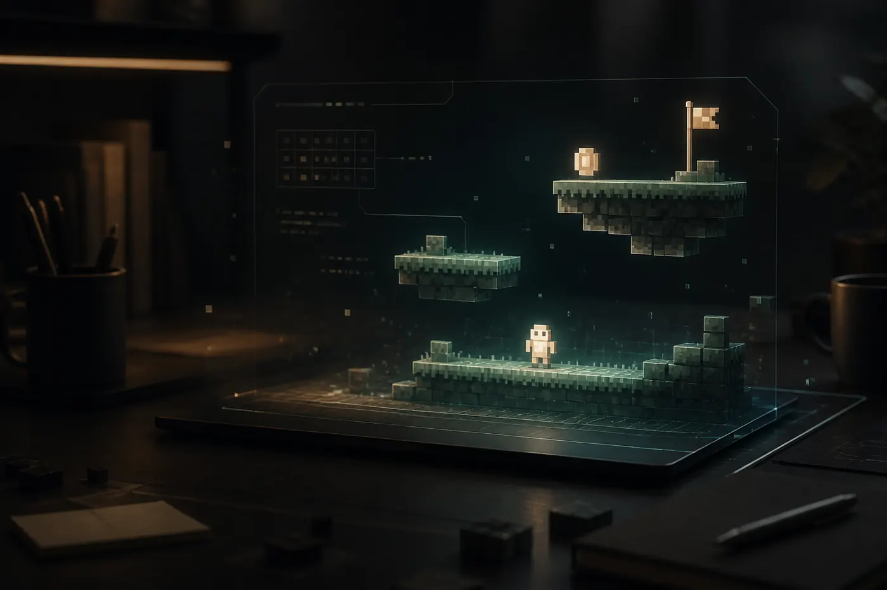
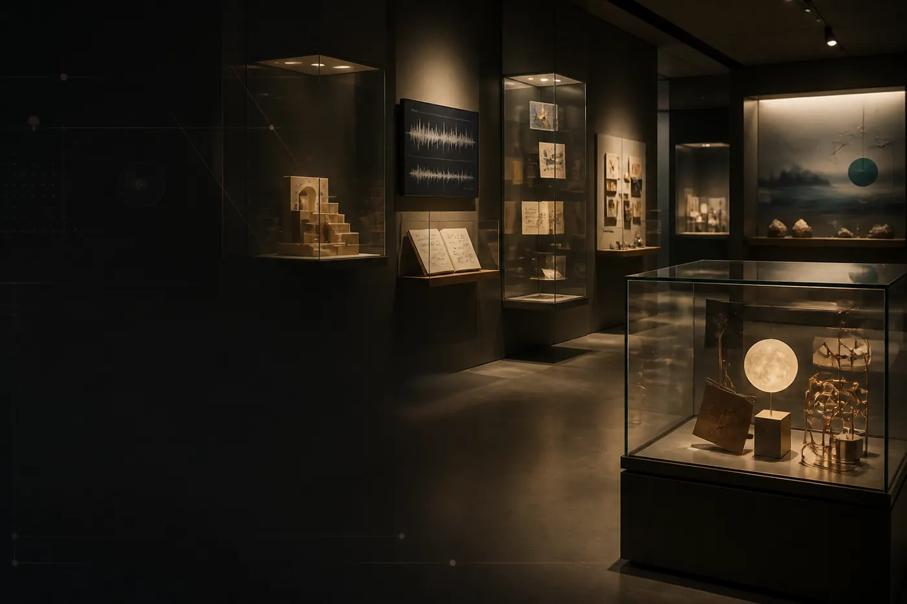
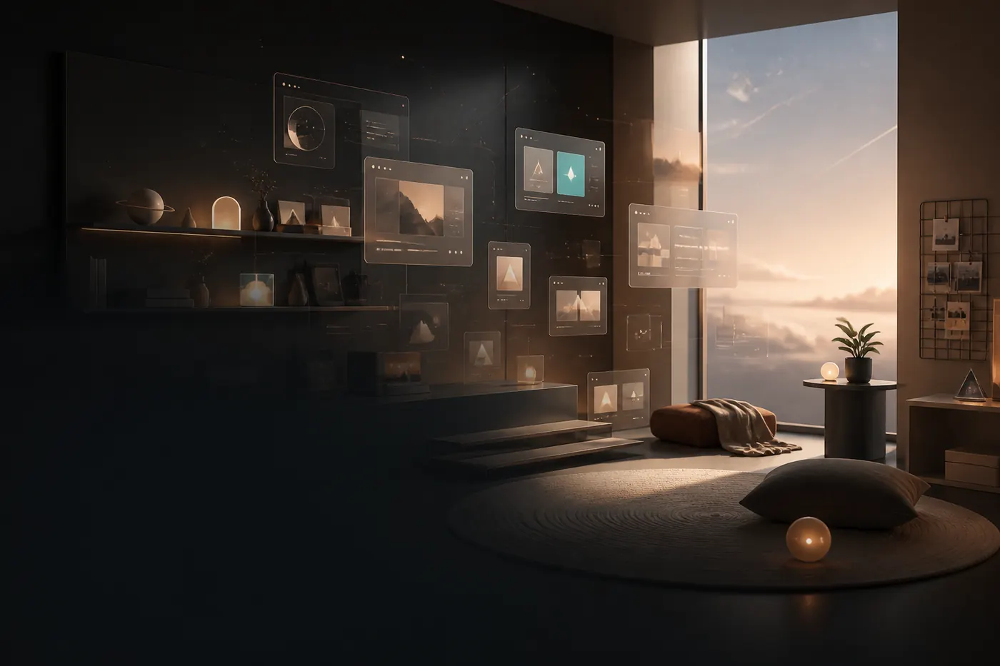

从兴趣开始
不是从知识点开始，而是从孩子还愿意接触的东西开始。
为什么需要这样的开始
很多孩子不是没有能力，也不是不想成长。
他们只是暂时无法再进入以考试、排名、标准答案为核心的学习方式。
有些孩子仍然愿意聊游戏、动漫、音乐、AI、故事、影像或某个奇怪的想法。
这些兴趣，可能就是重新开始的入口。
有的孩子已经不愿意打开课本，但还能认真讲一个角色为什么让他在意。这个时候，与其马上把话题拉回学习，不如先把这份在意接住，看看它能不能变成一个角色档案、一个互动故事，或一个只有自己能看懂的小网页。
这个项目是什么
不是从知识点开始，而是从孩子还愿意接触的东西开始。
孩子不需要先学会编程，AI 帮助把想法快速变成第一版作品。
我负责提问、拆解、降压、陪孩子修改，而不是逼孩子完成任务。
孩子可以做什么作品
下面不是“成果展示”，更像一些可能的开始方式。每个案例都可以很小，先让孩子看见：自己的一个想法，确实能被做出来。

如果孩子还能聊游戏，不急着把话题拉回学习。可以先把一个喜欢的机制拆小，做成只有几个按钮、几次反馈的网页小游戏。
有些话暂时说不出口，可以先做成一个不必马上展示的网页。孩子可以决定颜色、标题、哪些段落先隐藏。

把角色、音乐、设定、截图或观点整理成展厅。重点不是写作文，而是把“我在意什么”放进一个结构里。

用图片、链接、颜色、角落和物件搭一个线上房间。它不需要解释给所有人听，先像孩子自己就好。
围绕城市、街区、店铺或路线做一张探索图。一次很小的外出、一次拍照、一个地点标记，都可以成为作品的一部分。
从一个角色、一个场景或一句台词开始，做成可以选择路线、改写结局的短故事。
适合哪些孩子
第一次只聊了十几分钟，孩子只愿意挑颜色。第二次开始嫌 AI 写得“不像我”。第三次愿意改一个按钮、一段描述、一个结局。变化不大，但能看见一点重新参与的痕迹。
不适合什么情况
和常见服务有什么不同
| 类型 | 主要目标 | 典型方式 |
|---|---|---|
| 补课 | 提分、补知识点、应试 | 围绕教材、题目、考试要求推进 |
| 心理咨询 | 处理心理困扰、情绪议题 | 由专业咨询师在咨询边界内工作 |
| 编程课 / AI 课 | 学习技术、工具、项目 | 围绕课程大纲、技能点、项目成果推进 |
| AI 作品陪伴 | 恢复创造感、表达感和行动感 | 从兴趣出发，用 AI 做一个与孩子有关的小作品 |
4 周体验版流程
先了解孩子状态、家庭期待、当前边界，确认是否适合进入体验。
从兴趣、话题、素材或一个很小的想法出发，不急着定义成果。
一起拆成可以尝试的结构，选择合适的呈现形式。
借助 AI 快速生成雏形，让孩子能看到“想法变成东西”的过程。
围绕孩子的偏好调整文字、画面、互动和细节。
尊重孩子是否展示的选择，同时向家长反馈过程观察。
家长能看到什么
它不一定复杂，但应该能看见孩子的选择、兴趣和痕迹。
记录孩子在哪些环节更愿意参与，哪里需要降压或换入口。
不只看“学不学”，也看孩子仍然会被什么触动。
家长如何配合
不要追问“今天学了什么”。
不要要求孩子马上展示作品。
不要评价作品好不好、有用没用。
不要把作品和成绩、升学直接挂钩。
更适合问：“这个里面有你喜欢的部分吗？”“有没有哪里是你自己改的？”
边界说明
本项目不提供心理诊断、危机干预、学科补习、成绩提升承诺、回校承诺、编程技能保证。
如果孩子处于严重自伤风险或危机状态，请优先联系家人、医生、心理危机干预资源或当地紧急服务。